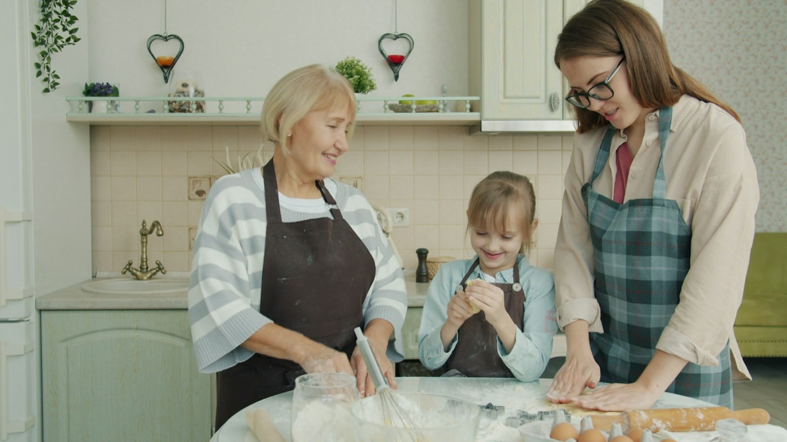

Help me choose
Start with what is worrying you most.
Tap the closest match, or take the 2-minute care quiz for a suggested plan.
All services
Seven services, one small team.
Mix them as needs change. The same support workers stay with you as the plan grows.
 Suggested for you
Suggested for youDementia care
Care that knows who they are, not only what they need.
From AUD $120/hourSee what is included › Suggested for you
Suggested for youPersonal care
Help with bathing and dressing that protects their dignity.
From AUD $102/hourSee what is included › Suggested for you
Suggested for youCompanion care
Someone to talk to, walk with and cook alongside.
From AUD $85/hourSee what is included › Suggested for you
Suggested for youRespite care
Take a break without worrying.
From AUD $85/hourSee what is included › Suggested for you
Suggested for youCare after hospital
Home from hospital. Care starting in 72 hours.
From AUD $102/hourSee what is included › Suggested for you
Suggested for you24/7 and live-in care
Around-the-clock care with a team, not one tired person.
From AUD $95/nightSee what is included › Suggested for you
Suggested for youCare from afar
Live far away? Be there anyway.
From AUD $120/hourSee what is included ›Compare
What each service includes.
| Service | What is included | Typical hours | From |
|---|---|---|---|
| Dementia care | Life Story profile, routines, sundowning and safety plans, family coaching | 15 to 50 a week | AUD $120/hour |
| Personal care | Bathing, dressing, toileting, transfers, grooming | 10 to 30 a week | AUD $102/hour |
| Companion care | Company, outings, meals, light housework, reminders | 6 to 20 a week | AUD $85/hour |
| Respite care | Hours to overnight breaks for the family carer | 4 hours to a weekend | AUD $85/hour |
| Care after hospital | Discharge coordination, first-week plan, personal care | Short term, 2 to 6 weeks | AUD $102/hour |
| 24/7 and live-in | Awake day shifts, awake or sleep-over nights, a team rota | Around the clock | AUD $95/night for nights |
| Care from afar | Named Care Director, app, monthly video call, errands | Added to any plan | AUD $120/hour |

Care that matches the day they are having.
Some days it is a walk and a chat. Some days it is a bath, a calm afternoon and a careful eye. The plan bends; the team stays the same.
How we are different
What you get with every service.
Dementia-trained, every one
Every support worker finishes our dementia training before their first visit, not 'when they get to it'.
The same small team
Two or three support workers who know them, and a backup you meet before day one.
You can see it happen
The family app shows check-ins, care notes and a weekly summary.
Promises with numbers
Start times, replacement times and call-back times we measure and publish.



Photos are illustrative stock images, not our clients.
What this does not cover
- Nursing or medical care such as injections, wound care or medication administration (we work alongside nurses and doctors)
- Cleaning a whole house top to bottom; we do light housework linked to their care
- Driving in a client's own car without the right insurance in place
Next step
You do not have to work this out alone.
Call (02) 5550 0142 and a care advisor will listen first, then tell you plainly what we would do and what it would cost.